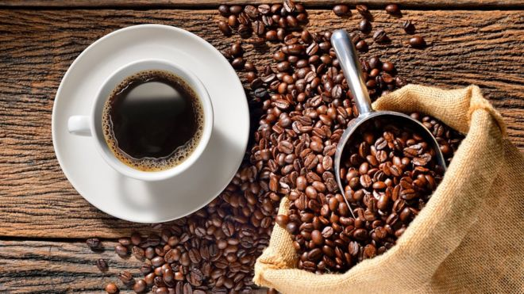

Hakkımızda
2004 yılında İstanbul’un Eminönü semtinde açtığımız ilk mağazamızla yakaladığımız büyüme ivmesini, her geçen gün daha da artırarak Türkiye’nin 34’ten fazla şehrine ulaştık. 2011 yılında Londra, Piccadilly Circus’ta açtığımız ilk yurt dışı mağazamıza gördüğümüz ilgiye karşılık olarak, ülke dışındaki girişimlerimize de hız verdik. Bugün yerli ve yabancı tüm tüketicilerimizin beğeni ve taleplerinden aldığımız güçle Türkiye, İngiltere, Romanya, Kuveyt ve Suudi Arabistan’da yer alan 200’den fazla mağaza ile toplam 450’den fazla noktada müşterilerimizle buluşuyoruz.
Tüm mağazalarımızın işletmesini kendimiz üstlenerek kalitemizi garanti altına alıyoruz. Türkiye’de bir benzeri olmayan kahve mağazacılığı anlayışıyla, sattığımız ve servis ettiğimiz tüm kahve, çikolata, dondurma ve unlu mamul çeşitlerinde kendi üretimimiz olmayan hiçbir ürünü müşterilerimize sunmuyoruz.
Kaliteli ve lezzetli ürün yelpazemiz ve kusursuz servisimizle, Türk kahvesi ve diğer özgün lezzetimizi, Türk ikram geleneği ve konukseverliğini sergileyerek dünyaya tanıtmaya devam ediyoruz.
Vizyon
Kaliteli, yenilikçi ve farklı ürünler yaratan, Türk kahve ve ikram kültürünü, Türkiye’nin yanı sıra tüm dünyada tüketicilerle buluşturup, müşterilerin kendilerini iyi hissedeceği ve keyifle tüketeceği ortamlarda sunarak, sektöründe en beğenilen ve tercih edilen marka olmak.
Misyon
Doğru kalite-fiyat oranını sağlayarak, geniş ürün yelpazesiyle tüketici beklentilerini en üst düzeyde karşılamak.